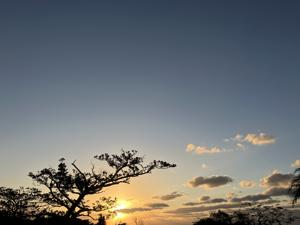
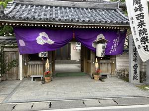
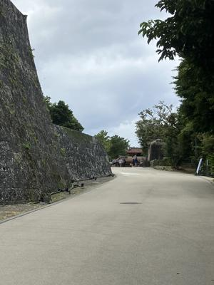

うるがいの話 ある日
最新: 初詣【うるがいの話 ある日】とは 一日だけのプログです
『うるがいの話』の最新一日だけのプログで、通信料が少なく経済的だ。カニの画像をクリックすると全ての日付が載る『うるがいの話』サイトを表示します
|
|
【うるがいの話】 うるがい(ｳﾙｶﾞｲ urugai)とは、『もずくがに』の名前でとても大きくなります。 |
|---|---|
|
|
【カミマヤーの話】 猫のことを方言でマヤーといいます。カミマヤー（kamimayaa）とは、神の猫のことです。 |
|
【たながぁの音楽】 たながぁ（ﾀﾅｶﾞｰ tanagaa）とは手長えびのことで、何種類かあり大きいのは車 エビぐらいになります。 |

|
【ぶながぁの話】 ぶながぁ(ﾌﾞﾅｶﾞｰ bunagaa)とは、赤い髪の毛、赤い身体、そして身長は１ｍ２０ｃｍ ぐらい、川の蟹を食べているの目撃された。場所は沖縄県国頭郡大宜味村のと ある村僕の隣近所に住んでいる爺さんから、聞いた話です。 |
|
|
【ギーマの話】 ギーマ(giima)とは、山原の里山に咲くスズランに似た、 花を付けます。実は食べられます、 気が付くと口の周りが紫になっています。 |
2025年01月05日 (日）初詣
15:31

達磨寺へ初詣に行く、さすがに５日目空いてました。門には門松が！懐
かしい。うちの近所は、しめ縄すらしない家が多くなりました。しめ縄
どころか、家の持ち主も、アラカキのオバーちゃん（今年亡くなったか
？）、トグチさん、まだ７０歳のミヤザドさんは老人施設などに行った
のか居ません。

ついでに首里城公園へ寄る。首里杜館（すいむいかん）にはいると観光
客が、ゾロゾロ、ん？、ピアノがある。毎月一度は、ジョギングコース
だったが、いつの間にか行かなくなったので。とある小学生（５，６年
生か）が、ピアノを弾く、ま、ま、この程度だろう・・、ただ、ピアノ
の音色がいい！！、まじかに聴くとすごい迫力があるのである。プロが
弾いたら凄いのだろう。ところで、私の家の近所、東、西、更に西、北
の方向の４軒、ピアノを置いていることをこのまえ知る。ただし、常時
ピアノの音が聞こえるのは、騒音被害の北の方向の家の老人の家である。
